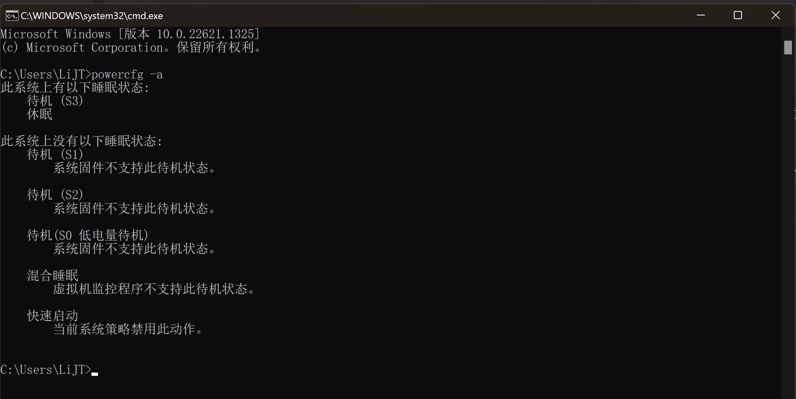

电脑配置：
- Thinkpad x13 Gen 2i
- CPU: Intel Core i7-1165G7; RAM: 16GB
- OS: Windows 11
省流：修改BIOS配置，将休眠策略转到S3
问题描述
- 电脑在开了较多进程并且休眠一段时间（大约大于5分钟）后重新唤醒，会变得巨卡无比。此时按快捷键
Ctrl+Shift+Esc进入任务管理器，查看硬件情况会发现CPU频率被锁定在0.39GHz。除非更改电源模式为“高性能”或重启电脑，否则锁频无法解除。然而在如此低的CPU频率下，即便是打开“设置”界面也会及其缓慢，甚至卡死，体验非常糟糕。
解决方案
- 在调研过一些解决方法后（如[1][2]），发现现有的方案大多基于电源策略调整和过热保护取消，但都不适用于我所面临的情况。但逻辑上能够推测，问题出现的原因是现有休眠策略的Bug。
- 继续调研，发Win10及Win11的电脑大多采用现代待机(modern standby)策略，而旧版本Windows常采用S3待机策略。于是尝试查看自己的待机策略：
- 按快捷键
Win+R, 在“打开”输入栏键入cmd，打开cmd界面 - 在cmd中，输入
powercfg -a，查看现有待机策略和可用待机策略 - 事实证明我的电脑确实处于现代待机，但能够支持S3待机策略
- 按快捷键
此图中，我已经将电源模式切换为S3.

- 于是解决方案为：
- 关闭电脑；重新开机时点击
F1键进入BIOS界面（注：不同的电脑的BIOS快捷键不一致） - 在BIOS中，进入Config界面，选择
Power：
- 在Power界面，将
Sleep State选项由Windows and Linux更改为Linux S3：
- 点击屏幕右下角
Save and Exit，退出BIOS界面。
- 至此，休眠锁频问题被彻底解决。
- 虽然切换到S3后，电脑需要按开机键才能唤醒，但唤醒速度很快，也不会出现“没完全睡醒”的情况。
- 所以说，只有夜晚保持充足睡眠，才能在白天保持充沛精力！！！